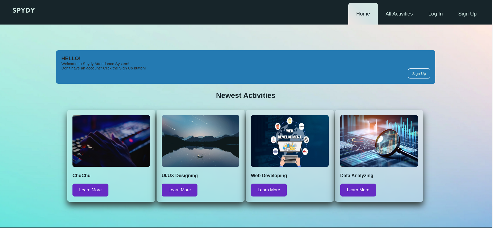

Some of My Recent Projects

Attendance System
This application is developed to help companies to record attendance and verify the presence individuals such as:
- This system can let managers manage registration and verification of attendance for users and various kinds of activities.
- Verification of attendance can be done by system administrator or Self- Check In only.
- This system can display the list of activities to participate in one page
- Every user can only register for once for each activity
- Self-authentication can only must be opened by the manager and only can be done in the activities on-site.